Version Control¶
Version control, also known as revision control or source control, is the management of changes to documents, computer programs, large web sites, and other collections of information.
Not a version control¶
Generally people confuse software versions with version control. They are not exactly same. For example, software version of LibreOffice-3.6.2 has nothing to do with term version control.
Why version control?¶
Why we keep track of our spendings, why we try to manage our files in computer? Version control is a generic process given to tools which we use to manage source code or files.
Version control systems provide you with three important capabilities [1] :
Reversibility: the ability to back up to a previous state, if you discover that some modification you did was a mistake or a bad idea.
Concurrency: the ability to have many people modifying the same collection of files, knowing that conflicting modifications can be detected and resolved.
History: the ability to attach historical details to your data, such as explanatory comments about the intention behind each change. Even for a programmer working solo, change histories are an important aid to memory; for a multi-person project, they are a vitally important form of communication among developers.
Almost all software applications are managed by some type of version control system.
We will focus on git version control, which is fast, robust, and most
popular tool around. Git written by Linus Torvalds to maintain Linux
kernel.
| [1] | www.gnu.org |
Git version control with simple hello world project¶
Assuming git is already installed on your machine.
Use git <command> –help or man git or man git <command> for quick reference.
Create a directory say hello-world in your HOME directory and cd
mkdir hello-world
then
cd hello-world
It is good practice to compose a README file, before writing any logic. Let’s create a file README.rst in present working directory with following content
1 2 3 4 5 6 7 8 9 10 11 12 13 14 15 16 17 18 19 20 21 22 23 24
README ====== What is this project for ? -------------------------- This project will create a binary executable file which when invoked will print **Hello World** on the terminal. Prerequisites ------------- * GCC (GNU Compiler collection) How to use ---------- Compile the source file and generate binary executable *hello* :: gcc hello_world.c -o hello Then execute :: ./helloAs README file is in place, let’s initialize git in this directory
git init
The above command will create an empty git repository in hello-world directory.
Now, as the repository is initialized, let’s add our file to this repository
git add README.rst
As README.rst file has been added to repository, git will start tracking changes to this file, but it won’t save any of those changes to repository.
User has to invoke git commit command, to save the state of tracked files. git commit will also prompt for commit message, a commit message is essentially a short description about the important changes
git commit
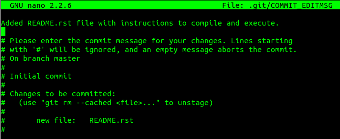Give meaningful description as commit message, as shown in the figure above. Assuming your default editor as GNU/nano press Control + o and Enter, to save and then Control + x, to exit. You can change this editor preference later.
Congratulations, you have successfully set git for your hello world project.
So, in short we did only these 3 steps
git init –> git add <file(s)> –> git commit
and that’s all about basic git.
NOTE: To remove any file from git repository, use
git rm <filename>
{kind=link}
More practical use of git¶
So far, we have seen git init, git add and git commit. This is only good enough for local repositories and single user projects but practically, we need more of git to manage project effectively.
In a condition where you want a team to work simultaneously on various parts of the project, it’s better to host your project online.
Benefits of git on server compared to local git repository¶
- One can access code from heaven/hell.
- Easy to share with concerned people.
- People can report bug(s), or raise issues.
- Easy to add or remove contributors.
Pushing project to server¶
There are many git hosting websites, such as gitourious.org,bitbucket.org,sourceforge.net etc.
We will choose github.com, which is reliable, fast and widely used. Most of the large projects can be found on github, including Linux kernel.
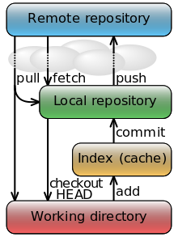{kind=link}
source: Wikipedia.org
So what must we do to push our hello world project online?
- Create a free account on github.com, and login.
- Initiate process to create new repository by clicking first option next to username on the top right corner of web page.
Give your local git directory name as your repository name, in our case it is hello-world. Enter a brief description about the project. When all set, create repository. See fig
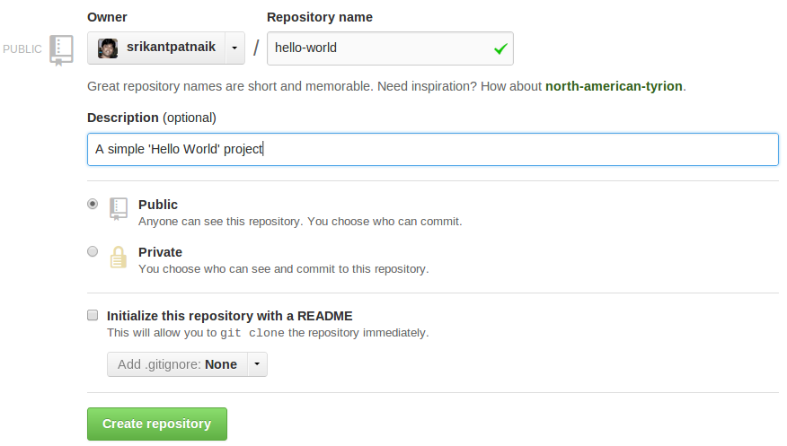A new page with two options will be displayed. We will choose the second option Push an existing repository from the command line, which is true in our case. See fig
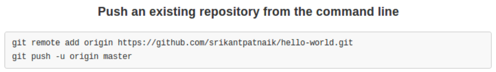Copy the git remote command and paste it on your terminal. This will add server address to be used by local repository to push changes to github.
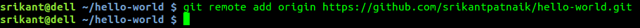Almost done. Now we need to push changes to server, git push -u origin master command will ask for your username and password of github account. When you enter there successfully, you will see your repository online.
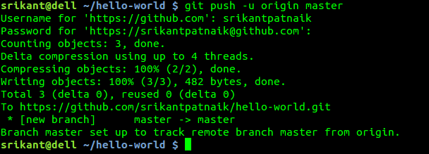
{kind=link}
{kind=link}
{kind=link}
{kind=link}
Remember, you need not to open github web page to push changes every time.
Adding collaborators to project¶
So our project is online, let’s add collaborators. As project admin, we can add as many as required. Once added, all collaborators will have read-write access to hello-world repository only.
Let’s continue with our hello world project, and extend it for multi-user and multi-file project.
Let’s add only one collaborator. Go to Settings tab on repository page and Collaborators option, and search for username to add. Refer fig
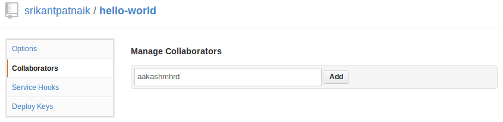{kind=link}
Splitting task and collaborator side¶
It’s a good practice to edit a file, by one person at a time.
Assume it was decided that user srikantpatnaik will only handle documentation, and the only collaborator aakashmhrd will write code.
Steps to perform on collaborator side.
Collaborator should first download the copy of the entire repository, find url to clone at the top section of the github page
git clone https://github.com/srikantpatnaik/hello-world.git
Now cd to hello-world directory
cd hello-world
As decided, collaborator will create hello_world.c file with the following content
1 2 3 4 5
#include <stdio.h> int main() { printf("Hello World\n"); return 0; }Add the newly created file to repository, and commit
git add hello_world.c
git commit will ask for username and email, as its the first time setup for aakashmhrd. Email and username need not be same as github.
This is a standard step when you run git for the first time. You need to enter these credentials even if you don’t ever push or communicate with any server
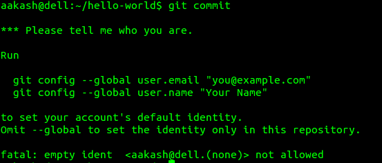Now add information required by git to proceed
git config --global user.email foo@nomail.com
To add user name
git config --global user.name "aakash mhrd"
Though it’s optional, still git status is a useful command to grace. This will show the state of the repository
git status
Now try git commit again, and enter suitable commit message
git commit
All set. Collaborator’s initial job is done. Let’s push back the changes to github server, git push will again prompt for username and password
git push
Please Remember that this is just a demo to make you understand how multiple users work on github, performing both admin(srikantpatnaik) and collaborator (aakashmhrd) task by the same person is not at all required.
{kind=link}
merge and reset¶
Let’s get into more details.
We know that collaborator(aakashmhrd) has pushed the changes to server but admin(srikantpatnaik) is unaware of those changes.
merge¶
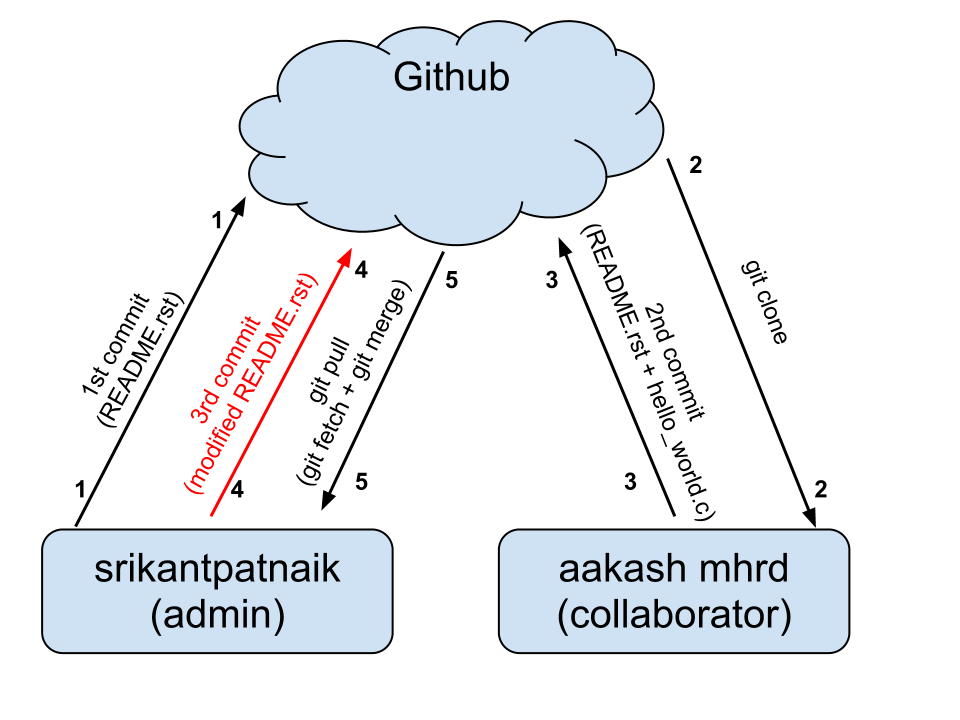{kind=link}
Let us assume that admin is also going to make some changes in his README.rst file.
Open the README.rst file and append the following at the end of the file
Thanks for using our hello world program.
Again perform git add and git commit as usual
(or)
as we only made update to file and didn’t added any new file, we can use a shortcut for commit, -a will include all the updated files or deleted files from the staging area. If you want to insert inline commit message(i.e without opening editor), you can simply use -m flag
git commit -am "added thank you at the end of the file"
Now try pushing changes to server, git push
Error
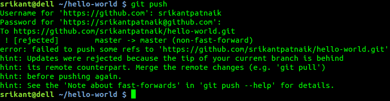Please read the error message carefully. Git error messages are self explanatory. In the hint section
hint: Updates were rejected because the tip of your current branch is behind
This tells that tip(latest commit) at server, is ahead of your local commit. Which is true, aakashmhrd has pushed changes to server, which are not present in srikantpatnaik version.
So what is the solution? Well, it’s always a good practice to do a git pull before an actual push. The git pull will internally do git fetch and git merge
git pull
So as I mentioned, a git pull will perform git fetch (download updated version from github) and git merge (join two or more development histories together).
The above git pull command will ask you enter a commit message about the necessity of the merge.
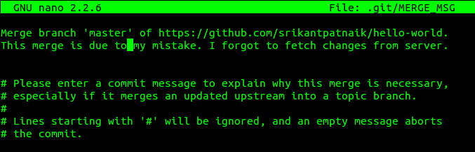This will create a new commit, try pushing the changes to github
git push
Now it will work normally. One must remember to perform a git pull before writing any meaningful code.
{kind=link}
{kind=link}
checkout and reset¶
In many situations, you might want to revert to a particular version. Let’s try reverting our repository where we had only README.rst file(i.e first commit).
Steps to follow:
To know all the commit history. Do
git log --all --graph
This will print all commits and respective commit messages, with latest commit at top.
To view all commits on master branch do
git log master
To revert to previous version, one can track through commit message. See that’s why commit message is important. In our case it says Added README.rst file with instructions to compile and execute.
To simply move our HEAD(latest commit) to commit corresponding to README.rst, we need to select its hash(SHA1)
git reset --hard 8bfd59e
This will reset repository head to first commit(i.e one with README.rst only).
Alternate to git reset, one can also do git checkout, which sometimes considered more safe
git checkout 8bfd59e
If you have modified files in the repo and you don’t want to commit them, then checkout will not take place. You need need to manually stash the changes before checkout
git stash
Now git log will simply show the head at 8bfd59e (minimum first 7 digits of hash are required to represent commit)
git log
If we feel to push this modified state to github
git push --force
If you feel to change the HEAD back to some other commit, then follow step 1,2 and 3 again.
Topics for self exploration¶
Git is a huge package to learn and practice.
We tried to cover only important and most frequently used options.
It is recommended to explore these commands too.
- .gitignore
- git branch
- git checkout
- git mv
- git tag
- git stash
How git works ?¶
A simple but important question, how does git work?
How it saves content? What makes it so fast even with hundreds of commits on thousands of files. I won’t be explaining in detail but will give you at least, a glimpse of it.
When committed, git actually stores a snapshot of entire project, it is similar to taking a picture of all the files at that moment. If some files have no changes, git doesn’t store them again, it rather link them to the previous version.
In the following figure, snapshot of each version is saved by git. For version-1 it saves all 3 files, for version-2 it saves only file A1, C1 and links file B to the previous version.

credits http://git-scm.com/book/en/Getting-Started-Git-Basics
If you are curious what is there inside your repository
ls -la .git
The .git/objects directory will contain repository related files in non-readable and non-editable format.
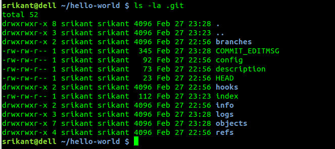{kind=link}
Warning
Never delete .git directory.